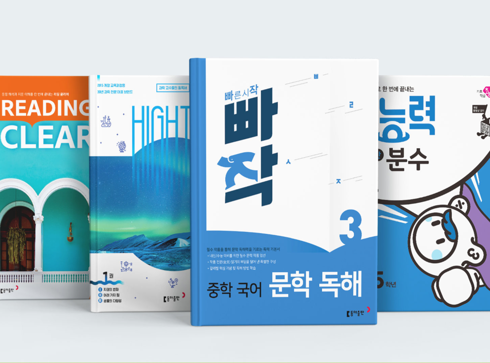

- 체질개선 및 성장기
- 교육정보 서비스 전환기
- 출판교육사업 확장기
- 출판보국 실천기

- 2020
- 2015 개정 교육과정 국정도서 52책 835만 부 발행(2020년~2021년)
- '제34회 책의 날' 기념, 출판 문화 발전 유공【문화체육장관상】 수상
- [인쇄부문] 안산시 '자원봉사자의 날' 기념,【자원봉사 감사패】 수상
- [유아] 《6세 초능력》시리즈 출간
- [초등] 《큐브수학S 개념+응용》출간
- [중학] 《특급기출-영어, 수학》,《서술형에 더 강해지는 중학 영문법》 출간
- [고등] 《시험에 더 강해지는 고등 영문법》,《빠작》출간
- 동아출판-서울교대가 함께하는《신나는 하이탑 과학 캠프》5기 진행(온라인캠프)
- 2019
- 2019년 국정교과서 발행권 수주(통합과목/ 2020년~2022년)
- [유아]《7세 초능력》시리즈 출간
- [초등]《하이탑》,《Grammar CLEAR Starter》,《뜯어먹는 초등 필수 영단어》 출간
- [중학]《절대등급》,《연산으로 강해지는 수학》,《빠르게 통하는 중학 영문법》출간
- [고등]《날선개념》출간
- 동아출판-서울교대가 함께하는《신나는 하이탑 과학 캠프》4기 진행
- 2018
- '2018 Blue Awards', 상품문화디자인 국제공모전【우수상】수상
- [인쇄부문] 안산 시장 【환경관리 우수기업】표창
- [인쇄부문] 안전 보건 공생 협력 프로그램 【A등급】획득
- 인쇄부문] '제13회 서울인쇄대상', 【은상】수상(‘탈무드’)
- [인쇄부문] '안산시 자원봉사의 날', 【감사패】수상
- [초등] 《초능력》시리즈 출간
- [중학] 《빠작》출간
- [고등] 《Supreme》출간
- 동아출판-서울교대가 함께하는 《신나는 하이탑 과학 캠프》3기 진행
- 2017
- 2015 개정 교육과정 검인정도서 152책, 460만 부 발행
- '2017 학부모가 뽑은 교육브랜드', 【대상】수상-《동아전과(연속 12년)》,《큐브수학S(비연속 11년)》,《백점맞는 시리즈(연속 10년)》
- [초등]《초고필》독해 시리즈 출간
- [중학]《클리어》시리즈 출간
- [고등]《코드엠》,《올쏘》,《싸플》출간
- 동아출판-서울교대가 함께하는 《신나는 하이탑 과학 캠프》1기/2기 진행
- 2016
- 2009 개정 교육과정 국정도서 46책 702만 부 발행
- '올해의 교육인상',【교육부장관상】수상
- '2016 학부모가 뽑은 교육브랜드', 【대상】수상-《차이를 만드는 시간》,《동아전과》,《백점맞는 시리즈》
- [인쇄부문] 환경 인증제【그린 등급】획득
- [인쇄부문]【인쇄문화대상 기술부문 대상】수상
- 2015
- 창립 70주년 비전 선포
- 예스24㈜에서 한세예스24홀딩스㈜로 주주 변경
- 2015 개정 교육과정 국정도서 초등 수학 1~2학년군 개발사 선정
- 2016학년도 국정도서 초등 사회·도덕 발행권 수주
- 《교과서 편찬의 실제》, 제35회【한국출판학회상(기획 편집 부문)】수상
- 2014
- ㈜두산에서 예스24㈜로 주주 변경,【동아출판(주)】로 상호 변경
- 2009 개정 교육과정 검인정도서 147책, 1,805만 부 발행(2014년~2019년)
- 한국전자통신연구원(ETRI)과 ‘지능형 영어 학습 시스템’ 시범 서비스 공동 참여
- '대한민국 교육브랜드', 【대상】수상-《뜯어먹는 시리즈》, 《하이탑 과학 시리즈(비연속 6회)》
- [인쇄부문] 고용노동부 일터혁신 우수기업 경진대회【우수상】 수상, 일터혁신 우수기업 인증 획득
- [인쇄부문] 안산 시장,【환경관리 우수사업장】으로 표창
- [인쇄부문] 대한산업안전협회,【산업 재해 예방】표창
- [인쇄부문] '안산시 자원봉사의 날',【감사패】수상
- 2013
- '프랑크푸르트 도서전', 한국전자통신연구원(ETRI)과 공동 전시(2013년, 2014년)
- 'IMS Learning Impact Award 2013',【디지털 콘텐츠 플랫폼 대상】수상(KERIS, 다우인큐브 공동)
- '이러닝코리아 2013',【KERIS 원장상】수상,【이러닝 솔루션 부문 우수상】수상(파수닷컴 공동)
- [인쇄부문] 한국산업안전보건공단,【산업재해예방】표창
- '2013 학부모가 뽑은 교육브랜드',【대상】수상
- 2012
- 교사용 멀티미디어 교수 학습 지원 사이트 ‘두클래스(DoUclass)’ 오픈
- '제3회 KIPFA 스마트앱어워드',【어학교육 분야 대상-프라임 영한한영사전 앱】,【학생교육 분야 대상- 동아전과 앱】,【어린이교육 분야 우수상-얌얌창의수학 앱】수상
- '2012 학부모가 뽑은 교육브랜드',【대상】수상-《차이를 만드는 시간》,《동아전과》,《백점맞는 시리즈》
- [인쇄부문] '대한민국 녹색경영대상',【환경부장관상】수상
- [인쇄부문] 안산상공회의소,【우수 제안 사례 최우수상】수상
- 2011
- 국내 최초 모바일용 디지털교과서 및 초등 디지털 참고서 출시
- ‘두산동아 -KAIST 융합형 창의 인재 육성 사업을 위한 업무 협약’ 체결
- '제11회 대한민국 디지털경영혁신대상',【특별상】수상
- '제23회 인쇄문화의 날',【문화체육관광부장관】표창
- '2011 대한민국 교육브랜드',【대상】수상
- '2011 학부모가 뽑은 교육브랜드',【대상】수상-《백점맞는시리즈》,《동아전과》,《동아큐브수학》
- [인쇄부문]【G7 Expert】,【G7 PC Expert】인증 획득(국내 최초)
- [인쇄부문] '에버그린 기업 환경 인증', 【Green】등급(최상위 등급) 획득
- 2010
- 2007 개정 교육과정 검인정도서 173책, 2,289만 부 발행(2010년~2015년)
- [인쇄부문] 디지털 인쇄기(Print On Demand) 공정 설비 구축
- '2010 대한민국 교육브랜드',【대상】수상-《백점맞는시리즈》,《동아전과》,《일등예감》
- '2010 학부모가 뽑은 교육브랜드',【대상】수상-《백점맞는시리즈》,《동아전과》,《동아큐브수학》,《동아스쿨》,《브레이니》
- [인쇄부문] IDEAlliance,【G7 Master 인증】획득 (국내 최초)
- [인쇄부문] 안전 보건 경영 시스템 【OHSAS】,【KOSHA 18001】인증 획득(업계 최초)
- [인쇄부문] 산업안전관리공단,【무재해 1배수 달성】인증
- 2009
- '2009 대한민국 교육브랜드',【대상】수상-《프라임》
- '2009 학부모가 뽑은 교육브랜드',【대상】 수상-《백점맞는시리즈》,《동아전과》,《동아 큐브수학》,《동아스쿨》,《브레이니》
- [인쇄부문]【Soy seal mark 사용 인증】취득(ASA-IM)
- 《한국문화사》30책 완간(국사편찬위원회 출판 약정/개발 기간 6년)
- 2008
- 【(주)두산 출판BG】에서【두산동아(주)】로 법인 분리, 독립 경영 체제 출범
- 국정도서 549책, 2억 2,462만 부 발행(2008년~2012년)
- '2008 대한민국 교육브랜드',【대상】수상-《백점맞는시리즈》, 《동아전과》,《동아 큐브수학》,《동아스쿨》,《브레이니》
- '2008 학부모가 뽑은 교육브랜드', 【대상】 수상-《백점맞는시리즈》,《동아전과》,《동아 큐브수학》,《동아스쿨》,《브레이니》
- '2008 올해의 브랜드 대상',【사서 부문 대상】수상-《프라임 시리즈》
- [인쇄부문] '제20회 인쇄문화의 날', 제24회【인쇄문화대상 직지상】수상
- [인쇄부문]【FSC 산림 인증】취득
- [인쇄부문]【환경경영시스템(ISO14001)】인증 취득
- 2007
- 국정도서 4개 과목군 발행권 획득(초등 수학, 초등 사회, 초등 통합, 중학 국어)
- 여성신문사, 제1회【바른교육인상】수상
- 제5회【한국교육산업대상】수상-《백점맞는수학》
- '2007 올해의 브랜드 대상',【사서 부문 대상】수상-《프라임 시리즈》
- [인쇄부문] '제19회 인쇄문화의 날', 제23회 【인쇄문화대상 기술 부문 대상】 수상
- [인쇄부문] MDC 활동 전개(일본 미즈가미社와 인쇄기술협정 체결)
- 2006
- 《秀프로젝트》, 【우수산업디자인(GD) 마크】 획득
- 《동아수련장》 12책 복간
- 2005
- '2005 책의 날' 기념,【대통령 표창】
- 《우리 옛이야기》, '제14회 노마(NOMA) 콩쿠르'【은상】수상
- 2004
- 유아교육사업 ‘킨더동아’ 진출
- 교과서 홈페이지 런칭, 교과서 정보 및 자료 온라인 서비스 개시
- [인쇄부문] '제16회 인쇄문화의 날', 제20회 【인쇄문화대상 직지상】수상
- 2004 【교육브랜드대상】수상-《동아스쿨》
- 《우리 옛이야기》, '제1회 한국출판문화대상'【일러스트레이션 부문 대상】수상
- [인쇄부문] 동아출판 '인쇄문화전시관' 안산 공장으로 이전 개관
- 2003
- 교육인적자원부 후원, 제1회【한국교육산업대상】수상
- 2002
- 제7차 교육과정 국정도서 125책 발행(2002년~2004년)
- 한국e-Book산업협의회【국무총리상】수상
- 2001
- 제7차 교육과정 검정도서 113책(국내 최다 발행 부수), 인정도서 58책 발행(2001년~2003년)
- 국정도서 발행권 수주(고등 국어, 국사, 외국어계 48책)
- 검정도서 그림 자료 기증【교육인적자원부장관 표창】
- 《큐브수학》시리즈 출간
- [인쇄부문] (주)두산 상사BG에서 출판BG 내 인쇄BU로 변경
- [인쇄부문] 천안 라벨 공장, 안산 공장으로 이전
- 2000
- 제1회 동아 수학경시대회 실시
- 《秀프로젝트》시리즈 출간
- [인쇄부문] 인쇄 수출 1,400만 달러 달성
- 1999
- 《표준국어대사전(국립국어연구원)》 출간,【백상출판문화상】 수상
- 《두산세계대백과사전》, 웹서비스 런칭(www.encyber.com), 제10회【간행물윤리상】수상
- 1998
- 두산동아, (주)두산으로 합병
- 《연세한국어사전》 출간,【백상출판문화상】수상
- [인쇄부문] ㈜이생지기 라벨 사업 부문 양수
- 1996
- 【동아출판사】에서【두산동아】로 상호 변경
- 《두산세계대백과사전》 개정판 출간
- 1995
- 제6차 교육과정 검정도서 161책 발행(1995년~1996년)
- 《오성식 생활영어 SOS》멀티미디어 CD-ROM 부문【금상】수상
- '제4회 어린이문화대상'【유아교육동화상】수상
- 《한국소설문학대계》100권 완간
- 1994
- [인쇄부문] 안산 인쇄 공장 준공
- [인쇄부문] 동아출판 '인쇄문화전시관' 개관(독산동 서울공장)
- 1993
- 교육 부문 케이블TV 방송 ‘DSN’ 설립
- '제15회 조세의 날', 【석탑산업훈장】수상
- '제15회 상공의 날', 【상공부장관상】수상
- 국내 최초 멀티미디어 CD-ROM《오성식 생활영어 SOS》출간
- 1992
- 《우리시대 우리작가》50권 출간
- [인쇄부문] 국내 최초 인쇄 품질명장 등록
- 1990
- 매출 1,000억 원, 수출 1,000만 달러 달성
- 1989
- 국내 최초 탁상 출판 시스템(DTP) 도입
- 제5차 교육과정 검정도서 129책 발행(1989년~1990년)
- 《동아 새국어사전》, 《동아 학생대백과사전》 출간
- 1988
- 《하이탑》 시리즈 출간
- [인쇄부문] 예멘 교과서 273종, 6,153,500부 수출
- 1987
- 《리더스 다이제스트》 한국판 발행권 확보
- [인쇄부문] 인쇄물 400만 달러 수출 유공자 포상
- 1985
- 동아출판사, (주)두산 계열사로 편입
- 1984
- 【보관문화훈장】 수상
- 제1회 【출판문화대상】 수상
- 《동아원색세계대백과사전》 30권 완간
- 1983
- 제4차 교육과정 검정도서 89책 발행(국내 최다 책수), 검인정도서 35종 61책 합격(국내 최다)
- 1981
- 제4차 교육과정 중학교 국정도서 27책 발행
- [인쇄부문] 필리핀 교과서 인쇄 · 수출 시작
- [인쇄부문] 국내 인쇄 업계 최초로 '인쇄실험실' 설치
- 1978
- 제3차 교육과정 검인정도서 8교과 9책(국내 최다 합격), 중학교 국정도서 4교과 18책 발행
- 1977
- 제3차 교육과정 검정도서 17책 발행
- 1975
- 독산동 사옥 완공 · 이전
- 1972
- 《현대활용옥편》 출간
- 1971
- 《완전정복》,《동아 프라임 영한사전》출간
- 1969
- 제2차 교육과정 국민학교 국정도서《글본》 1~6학년 6책 발행
- 1963
- 문교부 제1회 【우량출판사】 표창
- 《동아 새독한사전》,《한한대사전》,《신찬국어대사전》출간
- 1960
- 제1차 교육과정 검정도서 21종 발행
- 《고어사전》출간, 제1회 【한국출판문화상】수상
- 1958
- 《중학생 영어사전》출간
- 1957
- 국내 최초 활자 개혁, 아시아재단 표창
- 1955
- [인쇄부문] 인쇄공장 신축(서울 서대문 소재)
- 1953
- 《동아전과》,《동아수련장》 출간
- 1951
- 【동아출판사】로 사명 변경
- 1945
- 【동아프린트사 출판부】 설립
- 국내 최초의 교과서 《신생국어독본》발행